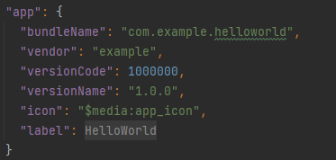
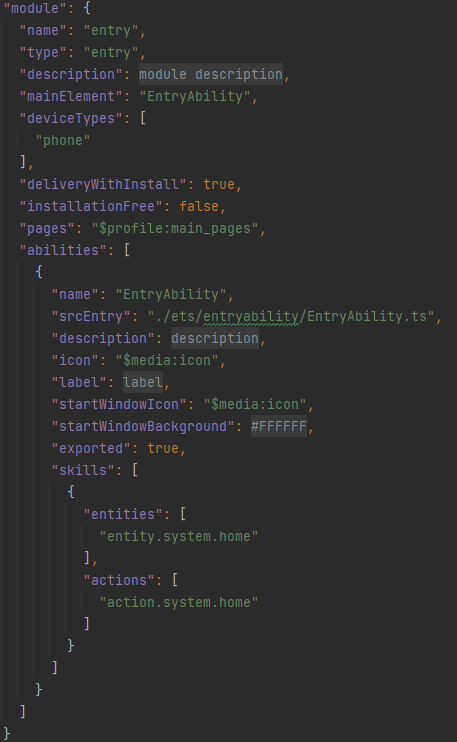
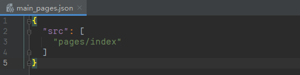
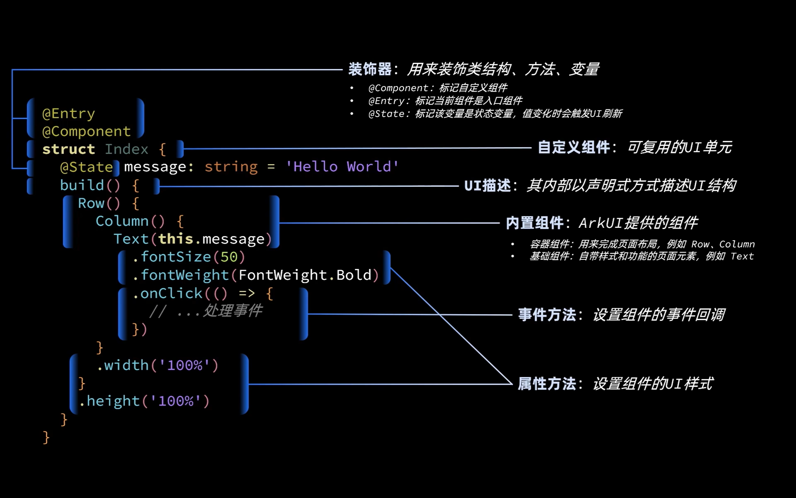

ArkTS语言
TypeScript
基础语法
TypeScript在JavaScript基础上加入了静态类型检查功能，因此每个变量都有固定的数据类型
let msg: string='hello world' |
let：声明变量的关键字，const代表常量
msg：变量名，自定义
string：变量数据类型
基础类型
-
boolean：布尔值
let isDone:boolean=false;
-
number：数字
TypeScript里所有数字都是浮点数，除了支持十进制，还支持二进制、八进制、十六进制，表示方式与其他语言类似
let decLiteral:number=2023
let binaryLiteral:number=0b11111100111
let octalLiteral:number=0o3747
let hexLiteral:number=0x7e7 -
string：字符串，可用双引号（"）或单引号（'）表示
let name:string="Jacky"
name="Tom"
name='Mick' -
数组
TypeScript支持一下两种方式声明数组：第一种，可在元素类型后接上[]，表示由此类型元素组成的一个数组；第二种方式是使用数组泛型，Array<元素类型>
let ages: number[]=[21,18]
let names: Array<string>=['Jack','Rose']
console.log(names[0])在数组循环时，可以有如下两种迭代方式
let ages: number[]=['Jack','Rose']
//for in迭代器，遍历得到数组角标
for (const i in names){
console.log(i+':'+name[i])
}
//for if迭代器，直接得到元素
for (const name of names){
console.log(name)
} -
元组
元组类型允许表示一个已知元素数量和类型的数组，各元素的类型不必相同
let x:[string,number]
x=['hello',10] -
enum：枚举
enum Color{Red,Green,Blue}
let c:Color=Color.Blue -
unknown
当为在编程阶段还不清楚类型的变量指定一个类型，可用unknown类型来标记此变量
let notSure:unknown=4
notSure='maybe a string instead'
notSure=false -
void
当一个函数没有返回值时，其返回值类型是void
function test():void{
console.log('This is function is void')
} -
null和undefined
let u:undefined=undefined
let n:null=null -
union：联合类型
表示取值可以为多种类型中的一种
let myFavoriteNumber:string|number
myFavoriteNumber='six'
myFavoriteNumber=6
补充
any：不确定类型，可以使任意类型
a=21Object：对象
取对象里的属性的时候↓
console.log(p['name'])
循环
当一个对象实现了Symbol.iterator属性时，认为它是可迭代的。一些内置的类型如Array、Map、Set、String、Int32Array、Uint32Array等都具有可迭代性
//for..of语句 |
//for..of vs for..in语句 |
for in：遍历得到数组角标
for of：遍历直接得到元素
函数
TypeScript通常利用function关键字声明函数，并且支持可选参数、默认参数、箭头函数等特殊语法
- 有名函数，给变量设置为number类型
function add(x:number,y:number):number{ |
- 匿名函数，给变量设置为number类型
let myAdd=function(x:number,y:number):number{ |
- 无返回值函数，返回值void可省略
function sayHello(name: string):void{ |
- 箭头函数
//它是定义匿名函数的简写语法，用于函数表达式，它省略了function关键字。箭头函数的定义如下，其函数是一个语句块： |
- 可选参数
//在参数名后加?,表示该参数是可选的 |
//函数的剩余参数，剩余参数会被当做个数不限的可选参数。可以一个都没有，也可以有任意个。可以用省流号(...)进行定义 |
- 参数默认值
//在参数后面赋值，表示参数默认值 |
类和接口
TypeScript具备面向对象编程的基本语法，例如interface、class、enum等。也具备封装、继承、多态等面向对象基本特征
class：类
class Person{ |
extends：继承
class Employee extends Person{ |
综合实践：
//定义矩形类 |
//定义枚举 |
模块
module。模块可以相互加载，并可以用特殊的指令export和import来交换功能，从另一个模块调用一个模块的函数
两模块间关系是通过在啊文件级别上使用import和export建立的。模块里面的变量、函数和类等在模块外部都是不可见的，除非明确地使用export导出它们。类似地，必须通过import导入其他模块导出的变量、函数、类等
export class NewData{ |
综合实践：
/*rectangle.ts*/ |
/*index.ts*/ |
DevEco Studio
- 目录概述
├─Demo |
- 运行
tools-Device Manager-Local Emulator
了解基本工程目录
工程级目录
工程的目录结构如下

其中详细如下：
- AppScope中存放应用全局所需要的资源文件
- entry是应用的主模块，存放HarmonyOS应用的代码、资源等
- oh_modules是工程的依赖包，存放工程依赖的源文件
- build-profile.json5是工程级配置信息，包括签名、产品配置等
- hvigorfile.ts是工程级编译构建任务脚本，hvigor是基于任务管理机制实现的一款全新的自动化构建工具，主要提供任务注册编排，工程模型管理、配置管理等核心能力
- oh-package.json5是工程级依赖配置文件，用于记录引入包的配置信息
在AppScope，其中有resources文件夹和配置文件app.json5。AppScope>resources>base中包含element和media两个文件夹，
- 其中element文件夹主要存放公共的字符串、布局文件等资源
- media存放全局公共的多媒体资源文件

模块级目录

entry>src目录中主要包含总的main文件夹，单元测试目录ohosTest，以及模块级的配置文件
- main文件夹中，ets文件夹用于存放ets代码，resources文件存放模块内的多媒体及布局文件等，module.json5文件为模块的配置文件
- ohosTest是单元测试目录
- build-profile.json5是模块级配置信息，包括编译构建配置项
- hvigorfile.ts文件是模块级构建脚本
- oh-package.json5是模块级依赖配置信息文件
进入src>main>ets目录中，其分为entryability、pages两个文件夹
- entryability存放ability文件，用于当前ability应用逻辑和生命周期管理
- pages存放UI界面相关代码文件，初始会生成一个Index页面

resources目录下存放模块公共的多媒体、字符串及布局文件等资源，分别存放在element、media文件夹中

app.json5
AppScope>app.json5是应用的全局的配置文件，用于存放应用公共的配置信息

其中配置信息如下：
- bundleName是包名
- vendor是应用程序供应商
- versionCode是用于区分应用版本
- versionName是版本号
- icon对应于应用的显示图标
- label是应用名
module.json5
entry>src>main>module.json5是模块的配置文件，包含当前模块的配置信息

其中module对应的是模块的配置信息，一个模块对应一个打包后的hap包，hap包全称是HarmonyOS Ability Package，其中包含了ability、第三方库、资源和配置文件。其具体属性及其描述可以参照下表1
| 属性 | 描述 |
|---|---|
| name | 该标签标识当前module的名字，module打包成hap后，表示hap的名称，标签值采用字符串表示（最大长度31个字节），该名称在整个应用要唯一。 |
| type | 表示模块的类型，类型有三种，分别是entry、feature和har。 |
| srcEntry | 当前模块的入口文件路径。 |
| description | 当前模块的描述信息。 |
| mainElement | 该标签标识hap的入口ability名称或者extension名称。只有配置为mainElement的ability或者extension才允许在服务中心露出。 |
| deviceTypes | 该标签标识hap可以运行在哪类设备上，标签值采用字符串数组的表示。 |
| deliveryWithInstall | 标识当前Module是否在用户主动安装的时候安装，表示该Module对应的HAP是否跟随应用一起安装。- true：主动安装时安装。- false：主动安装时不安装。 |
| installationFree | 标识当前Module是否支持免安装特性。- true：表示支持免安装特性，且符合免安装约束。- false：表示不支持免安装特性。 |
| pages | 对应的是main_pages.json文件，用于配置ability中用到的page信息。 |
| abilities | 是一个数组，存放当前模块中所有的ability元能力的配置信息，其中可以有多个ability。 |
对于abilities中每一个ability的属性项，其描述信息如下表2
| 属性 | 描述 |
|---|---|
| name | 该标签标识当前ability的逻辑名，该名称在整个应用要唯一，标签值采用字符串表示（最大长度127个字节）。 |
| srcEntry | ability的入口代码路径。 |
| description | ability的描述信息。 |
| icon | ability的图标。该标签标识ability图标，标签值为资源文件的索引。该标签可缺省，缺省值为空。如果ability被配置为MainElement，该标签必须配置。 |
| label | ability的标签名。 |
| startWindowIcon | 启动页面的图标。 |
| startWindowBackground | 启动页面的背景色。 |
| visible | ability是否可以被其他应用程序调用，true表示可以被其它应用调用， false表示不可以被其它应用调用。 |
| skills | 标识能够接收的意图的action值的集合，取值通常为系统预定义的action值，也允许自定义。 |
| entities | 标识能够接收的Want的Action值的集合，取值通常为系统预定义的action值，也允许自定义。 |
| actions | 标识能够接收Want的Entity值的集合。 |
main_pages.json
src/main/resources/base/profile/main_pages.json文件保存的是页面page的路径配置信息，所有需要进行路由跳转的page页面都要在这里进行配置

Hello World
@Entry |

组件介绍
Image：图片显示组件
-
声明Image组件并设置图片源
Image(src: string|PixelMap|Resource)
-
string格式，通常用来加载网络图片
需要申请网络访问权限：
ohos.permission.INTERNET
Image('https://xxx.png')
-
PixelMap格式，可以加载像素图，常用在图片编辑中
Image(PixelMapObject)
精确到像素，将来可以去操作这些像素从而实现对图片的编辑修改
使用起来较繁琐，需要构建PixelMap对象然后传递给Image
-
Resource格式，加载本地图片，推荐使用
Image($r('app.media.example'))
Image($rawfile('example.png'))对应项目文件的两个目录：media、rawfile
-
-
添加图片属性
Image('....')
.borderRadius(10)//边框圆角
.interpolation(ImageInterpolation.High)//图片插值（抗锯齿化）此外还需要在module.json5文件中的module下添加：
"requestPermissions":[
{
"name": "ohos.permission.INTERNET"
}
]
Text：文本显示组件
-
声明Text组件并设置文本内容
Text(content?: string|Resource)
-
string格式，直接填写文本内容
Text('图片宽度')
-
Resource格式，读取本地资源文件
Text($r('app.string.width_label'))
读取本地资源文件里的字符串内容然后展示在页面
在限定词目录中写入键值对后也要在base目录中的string.json写入

-

TextInput：文本输入框
-
声明TextInput组件：
TextInput({placeholder?: ResourceStr, text?: ResourceStr})
-
placeholder：输入框无输入时的提示文本
TextInput({placeholder: '请输入账号或手机号'})
-
text：输入框当前的文本内容
TextInput({text: 'test'})
-
-
添加属性和事件
.type(InputType.Password)//输入框类型
.onChange(value=>{
//value是用户输入的文本内容
})
Button：按钮组件
-
声明Button组件，label是按钮文字
Button(label?: ResourceStr)
-
文字型按钮
Button('点我')
-
自定义按钮，在Button内嵌套其他组件
Button(){
Image($r('app.media.search')).width(20).margin(10)
}
-
-
添加属性和事件
Button('点我')
.type(ButtonType.Capsule)
.onClick(()=>{
//处理点击事件
})
Slider组件：滑动条组件
Slider(options?:SliderOptions) |
Slider({ |
Stack组件：堆叠容器
子组件按照顺序依次入栈，后一个子组件覆盖前一个子组件
Stack(value?:{alignContent?:Alignment}) |
页面布局


| 属性方法名 | 说明 | 参数 |
|---|---|---|
| justifyContent | 设置子元素在主轴方向的对齐格式 | FlexAlign枚举 |
| alignItems | 设置子元素在交叉轴方向的对齐格式 | Row容器使用VerticalAlign枚举Column容器使用HorizontalAlign枚举 |
- 主轴方向的对齐格式

- 交叉轴方向的对齐格式

默认情况下，在交叉轴上默认都是center
- padding&margin
margin是指从自身边框到另一个容器边框之间的距离，即容器外距离，是隔开元素与元素的间距
padding是指自身边框到自身内部另一个容器边框之间的距离，即可容器内距离，是盒子边框与盒子内部元素的距离

- List：支持自动滚动功能
既可以纵向排列，也可以横向排列
自定义组件
定义名为TitleComponent的自定义组件
|
定义名为ItemPage的自定义组件，在其中使用Header组件
|
当一个组件中使用另一个组件的内容时，这个组件就被称为父组件，被使用的组件成为子组件
自定义组件生命周期回调函数

自定义组件从创建到销毁的过程，此过程中系统提供了生命周期回调函数aboutToAppear和aboutToDisappear用于通知开发者该自定义组件所处的阶段
aboutToAppear在创建自定义组件的实例后到执行其build函数之前执行，可在aboutToAppear函数中对UI需要展示的数据进行初始化，或者申请定时器资源等操作，这样在后续build函数中可以使用这些数据和资源来进行UI展示
aboutToDisappear在自定义组件实例被销毁时调用，可在aboutToDisappear中释放不再使用的资源避免资源泄露。比如释放在aboutToAppear申请的定时器资源等。
所以自定义组件生命周期回调函数能够为我们在不同阶段操作自定义组件提供契机，方便实现业务逻辑。需要注意的是由于这些回调函数是私有的，系统会在特定的时间下自动调用，是无法手动调用这些回调函数的
@Entry修饰的页面入口组件生命周期回调函数

对于页面入口组件，系统提供了另外三个生命周期函数：onPageShow、onBackPress和onPageHide
自定义构建函数
用来做内部的页面封装更加合适一些
- 全局自定义构建函数（当前组件的外部）
function ItemCard(){ |
- 局部自定义构建函数
ItemCard(){ |
局部在调用时需要写为this.ItemCard()
自定义公共样式
- 全局公共样式函数
function fillScreen(){ |
凡是公共样式函数，内部写的属性必须是所有组件通用的属性
如果是组件特殊属性，用@Extend来继承，且Extend不能写在组件内
//样式
}
- 内部公共样式函数
fillScreen(){ |
状态管理
@State
在声明式UI中，是以状态驱动视图更新
flowchart LR |
- 状态（State）：驱动视图更新的数据（被装饰器标记的变量）
- 视图（View）：基于UI描述渲染得到的用户界面
@State装饰器标记的变量必须初始化，不能为空
@State支持Object、class、string、number、boolean、enum类型以及这些类型的数组
嵌套类型以及数组中的对象属性无法触发视图更新
@Prop、@Link
父（入口组件）子（被引用的其他组件）组件之间需要数据同步时使用
| @Prop | @Link | |
|---|---|---|
| 同步类型 | 单向同步 | 双向同步 |
| 允许装饰的变量类型 | @Prop只支持string、number、boolean、enum类型 父组件对象类型，子组件是对象属性 不可以是数组、any |
父子类型一致：string、number、boolean、enum、object、class以及他们的数组 数组中元素增、删、替换会引起刷新 嵌套类型以及数组中的对象属性无法触发视图更新 |
| 初始化方式 | 不允许子组件初始化 | 父组件传递，进制子组件初始化 |
@Provide、@Consume
@Provide和@Consume可以跨组件提供类似于@Prop和@Link的双向同步

代价：需要内部去维护，有一些资源上的损耗
@Observed、@ObjectLink
@Observed和@ObjectLink用于在设计嵌套对象或数组元素为对象的场景中进行双向数据同步
页面路由
页面栈的最大容量上限为32个页面，使用router.clear()方法可以清空页面栈，释放内存
Router有两种页面跳转模式：
- router.pushUrl()：目标页不会替换当前页，而是压入页面栈，因此可以用router.back()返回当前页
- router.replaceUrl()：目标页替换当前页，当前页会被销毁并释放资源，无法返回当前页
Router有两种页面实例模式：
- Standard：标准实例模式，每次跳转都会新建一个目标页并压入栈顶。默认就是这种模式
- Single：单实例模式，如果目标页已经在栈中，则离栈顶最近的同URL页面会被移动到栈顶并重新加载
-
导入HarmonyOS提供的Router模块
import router from '@ohos.router'
-
利用router实现跳转、返回等操作
//跳转到指定路径，并传递参数
router.pushUrl(
{
url:'pages/Image',
//params：传递的参数（可选）
params:{id:1}
},
router.RouterMode.Single,
//异常响应回调函数，错误码：
//100001：内部错误，可能是渲染失败
//100002：路由地址错误
//100003：路由栈种页面超过32
err=>{
if(err){
console.log('路由失败.')
}
}
)//获取传递过来的参数
params: any=router.getParams()
//返回上一页
router.back()
//返回指定页，并携带参数
router.back(
{
url:'pages/Index',
params:{id:10}
}
)
杂项
-
parseInt()：将字符串转成int类型
-
toFixed()：将数字转成字符串，括号中为保留小数点的位数
-
子组件的build函数里只能有一个根元素（比如Button和List并列，应将他俩封装到一个容器里）
-
.opacity(0.5)：修改透明度